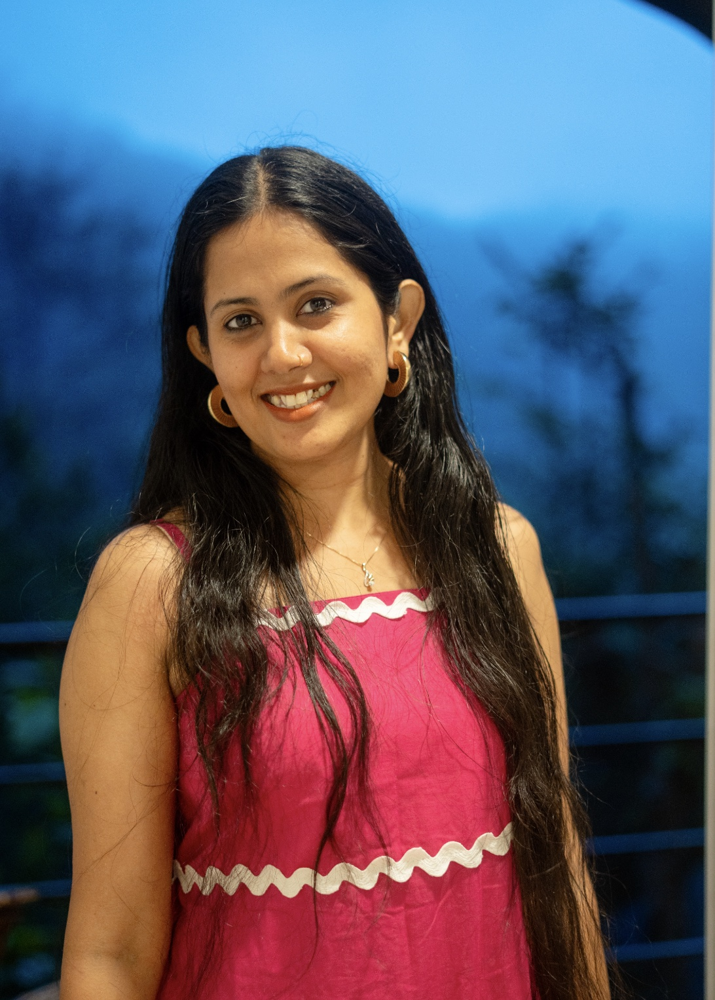
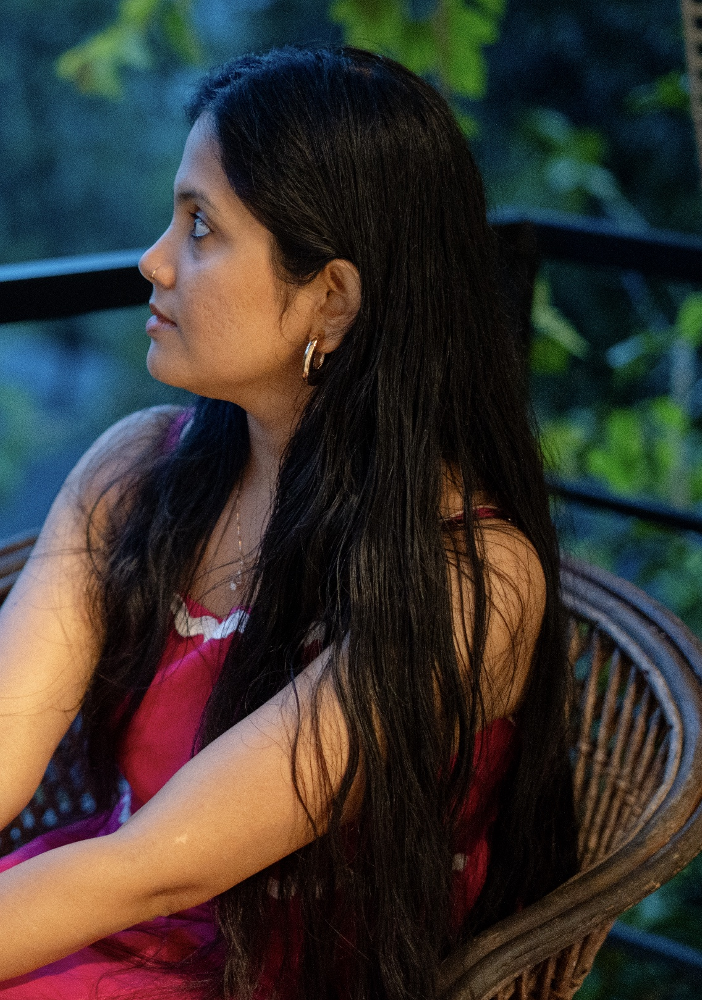
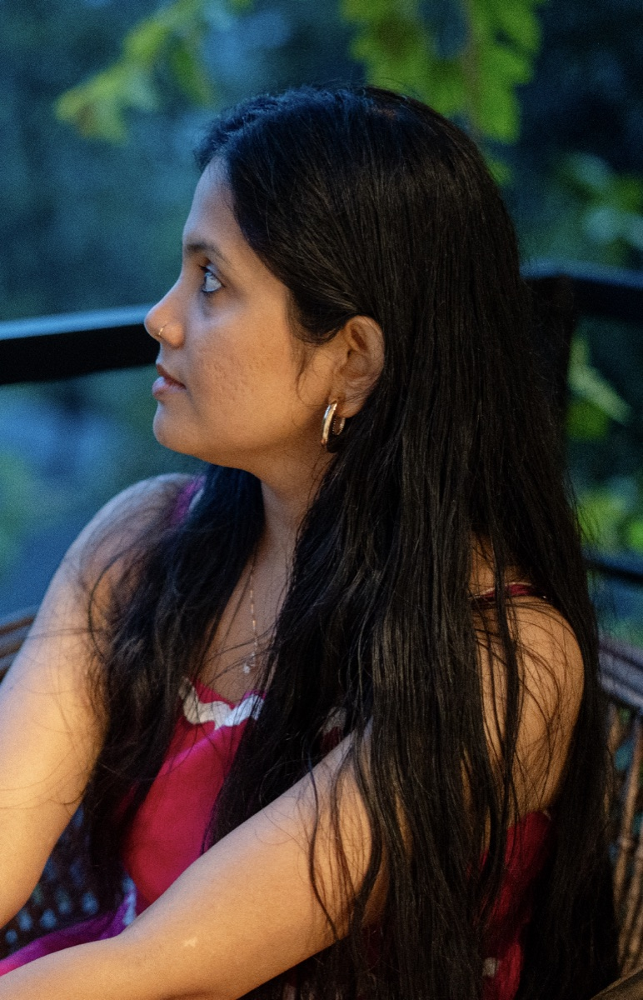
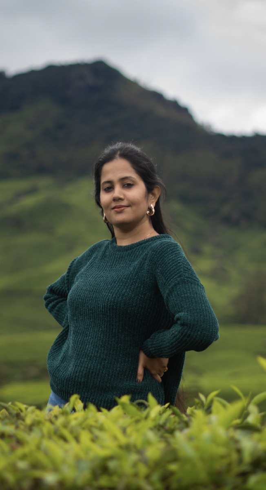
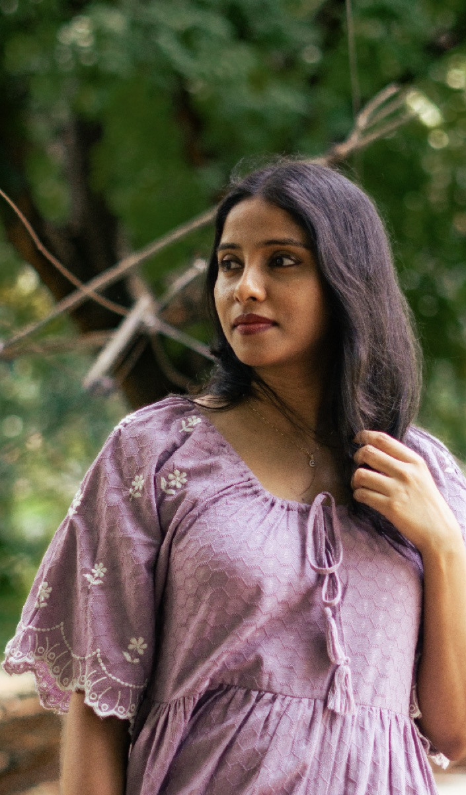
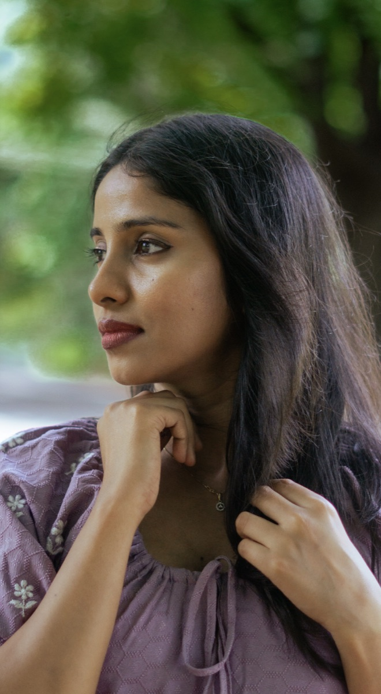
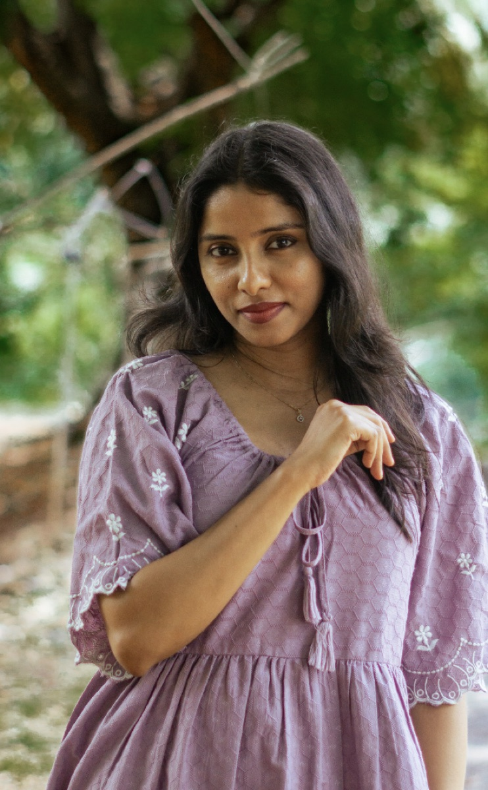
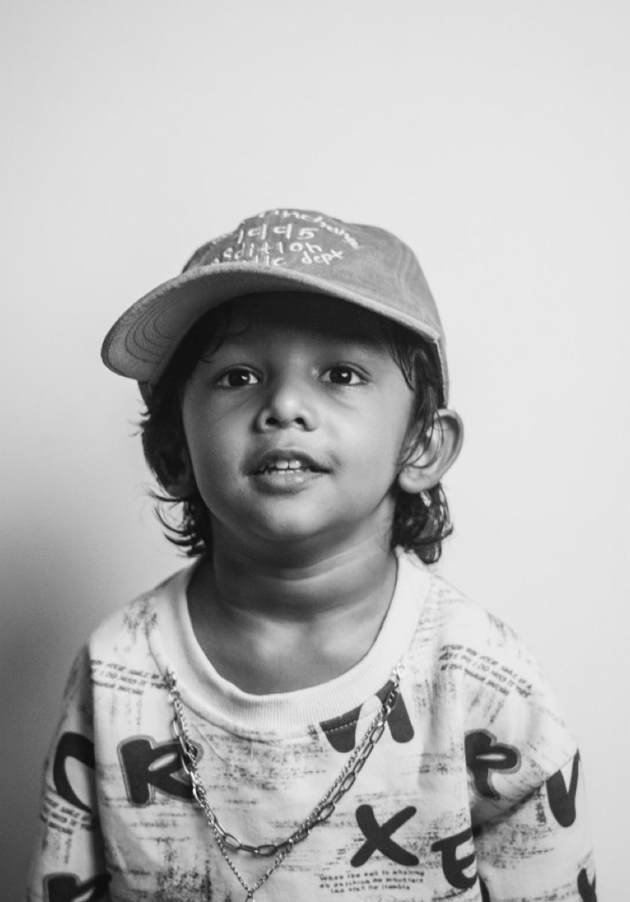
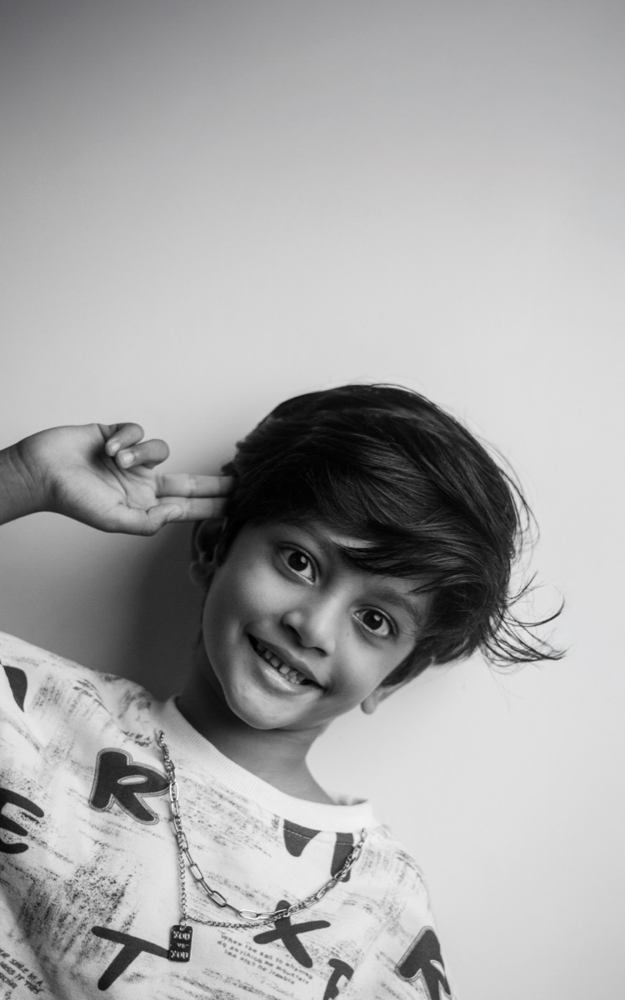
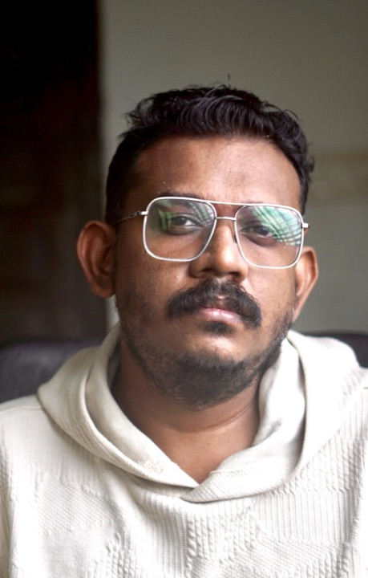

The street,
as it happens.
A collection of passing moments and everyday stories, seen through the lens of Rahul Vivek.









Collected moments, out in the open.
A little about the photographer
Hello, I’m
Rahul.

I’m the photographer behind sidewalk_stories.
A software engineer by profession and a storyteller through my lens, I find inspiration in candid moments, soulful portraits, moody cityscapes, and the beauty of everyday life.
I believe the best photographs aren't just seen — they're felt. My goal is to capture honest emotions, beautiful light, and fleeting moments that tell a story of their own.
Chasing light. Finding stories. Keeping moments alive.
Read the blogHave a story in mind?